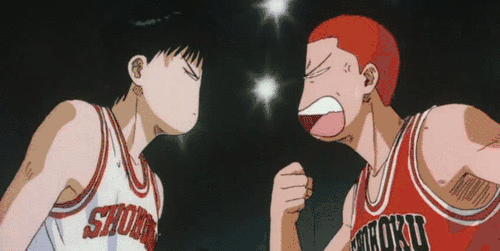
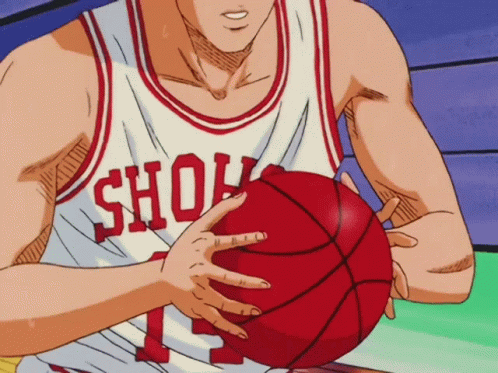
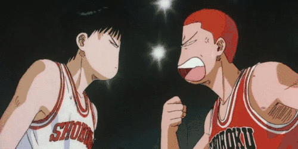
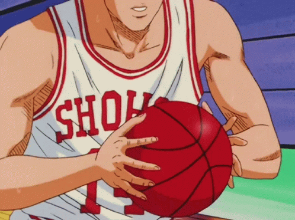

Hanamichi Sakuragi
Hanamichi Sakuragi (桜木 花道 Sakuragi Hanamichi) is the main protagonist of the Slam Dunk series. He plays as a power forward (and occasionally as a backup center) for the Shohoku High School basketball team.
 


